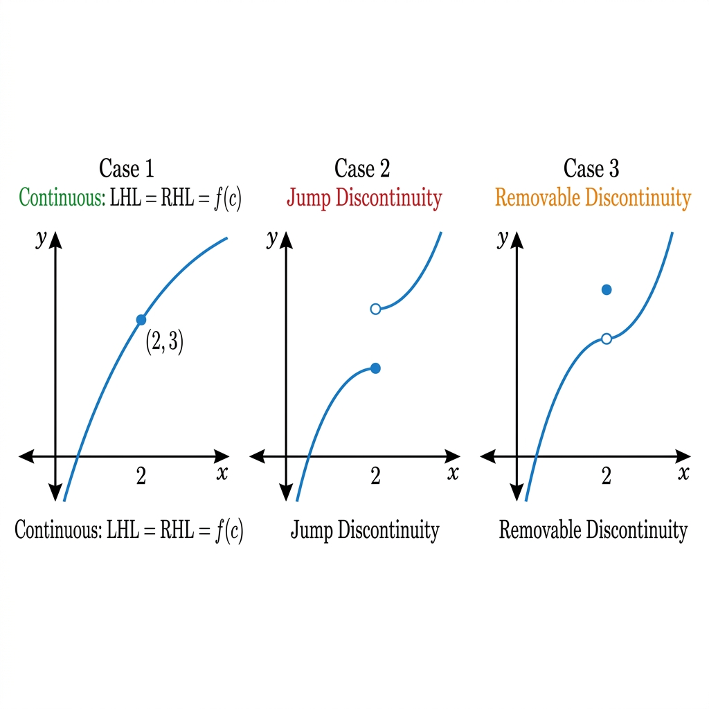
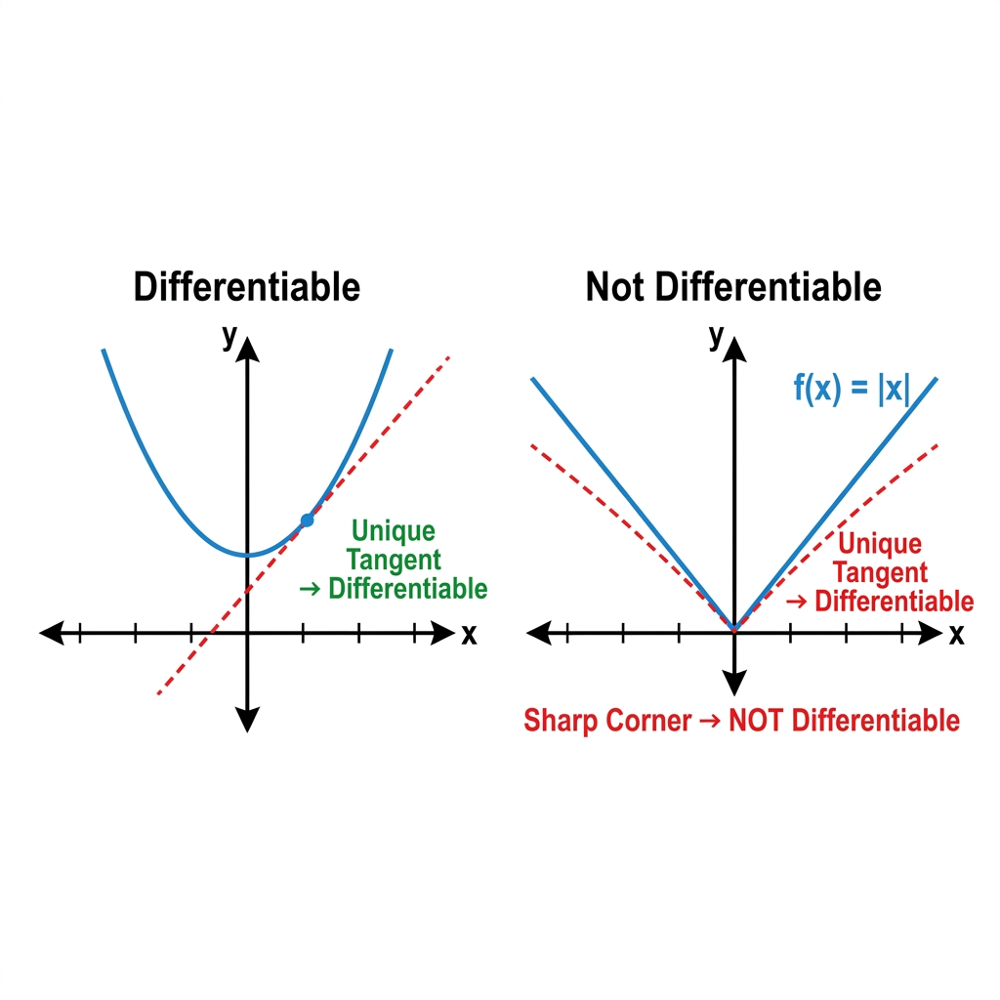
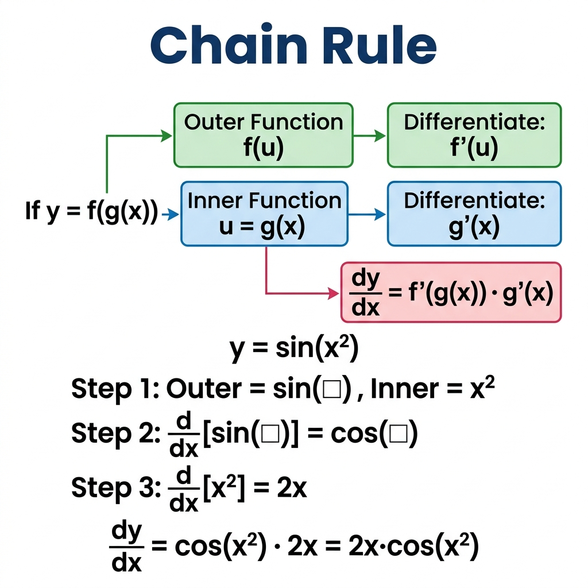

Class 12 Mathematics • Comprehensive Chapter Notes
🌐 vardaanlearning.com📞 9508841336
Chapter 5: Continuity and Differentiability
Board | JEE Mains | NDA | CDS — Complete Coverage with Theory, Examples & Practice Problems
📖 To the Student: Chapter 5 is the engine of all calculus. Every chapter that follows — Integration, Differential Equations, Application of Derivatives — runs on the fuel you master here. In NCERT, R.D. Sharma, and R.S. Aggarwal, the toughest problems use Chain Rule + Logarithmic Differentiation + Implicit Differentiation together. Master these three and you control the chapter. For NDA/CDS, focus especially on standard derivatives and the Mean Value Theorems. For JEE Mains, inverse trig substitution problems and second-order derivative "prove that" questions are the key differentiators. Let's begin!
1. Continuity of a Function
Intuitive Idea (NCERT): A function is continuous at a point if you can draw its graph through that point without ever lifting your pen from the paper. There are no breaks, jumps, or holes.

Fig 1.1 — Three cases: Continuous (no break), Jump Discontinuity (gap), and Removable Discontinuity (hole)
Three Conditions of Continuity at a Point $x = c$
Formal Definition (NCERT / R.D. Sharma)
A function $f(x)$ is said to be continuous at a point $x = c$ if and only if ALL three conditions below are simultaneously satisfied:
Condition 1: $f(c)$ exists (i.e., $c$ is in the domain of $f$). Condition 2: $\displaystyle\lim_{x \to c} f(x)$ exists, which means $\displaystyle\lim_{x \to c^-} f(x) = \lim_{x \to c^+} f(x)$ (i.e., LHL = RHL). Condition 3: The limit equals the function value.
$$\boxed{\lim_{x \to c^-} f(x) = \lim_{x \to c^+} f(x) = f(c)}$$
If even one condition fails, $f$ is discontinuous at $x = c$.
Step-by-Step Algorithm (R.D. Sharma Method)
To check continuity at $x = c$: Step 1: Find $f(c)$ directly by substituting $x = c$. Step 2: Find LHL: Put $x = c - h$ and let $h \to 0^+$. $\quad LHL = \displaystyle\lim_{h \to 0^+} f(c - h)$ Step 3: Find RHL: Put $x = c + h$ and let $h \to 0^+$. $\quad RHL = \displaystyle\lim_{h \to 0^+} f(c + h)$ Step 4: Compare. If $LHL = RHL = f(c)$, the function is continuous. Otherwise, discontinuous.
Types of Discontinuity
Type
What Happens
Example
Removable?
Removable (Missing Point)
LHL = RHL but $\neq f(c)$ OR $f(c)$ undefined
$f(x) = \frac{\sin x}{x}$ at $x=0$
✅ Yes — redefine $f(c)$
Jump (Finite)
LHL $\neq$ RHL but both exist and are finite
Signum function at $x = 0$
❌ No
Infinite
Either limit $\to \pm\infty$
$f(x) = \frac{1}{x}$ at $x = 0$
❌ No
Oscillatory
Limit oscillates without settling
$f(x) = \sin\!\left(\frac{1}{x}\right)$ at $x = 0$
❌ No
Continuity in an Interval
Open Interval $(a, b)$: $f(x)$ is continuous at every point strictly between $a$ and $b$.
Closed Interval $[a, b]$: $f(x)$ is continuous in $(a,b)$, and additionally:
Right-continuous at $a$: $\displaystyle\lim_{x \to a^+} f(x) = f(a)$
Left-continuous at $b$: $\displaystyle\lim_{x \to b^-} f(x) = f(b)$
Practice Problem 1 BoardQ: Examine the continuity of $f(x)$ at $x = 2$, where:
$$f(x) = \begin{cases} 2x + 3, & \text{if } x \le 2 \\ 2x - 3, & \text{if } x > 2 \end{cases}$$
Practice Problem 2 BoardNDAQ: Find the value of $k$ so that the following function is continuous at $x = 3$:
$$f(x) = \begin{cases} \dfrac{x^2 - 9}{x - 3}, & x \ne 3 \\ k, & x = 3 \end{cases}$$
Practice Problem 3 JEEQ: Find all values of $a$ and $b$ such that the function below is continuous at every real number $x$:
$$f(x) = \begin{cases} \dfrac{|x+3|}{x+3}, & x < -3 \\ a, & x = -3 \\ b\cdot\dfrac{x-3}{|x-3|}, & -3 < x < 3 \\ 2b, & x \ge 3 \end{cases}$$
Solution: At $x = -3$: LHL: $\displaystyle\lim_{x \to -3^-} \frac{|x+3|}{x+3}$. For $x < -3$: $x+3 < 0$, so $|x+3| = -(x+3)$. Thus LHL $= \frac{-(x+3)}{x+3} = -1$.
RHL: $\displaystyle\lim_{x \to -3^+} b\cdot\frac{x-3}{|x-3|}$. For $-3 < x < 3$: $x - 3 < 0$, so $|x-3| = -(x-3)$. Thus RHL $= b \cdot \frac{x-3}{-(x-3)} = -b$.
For continuity at $x=-3$: $LHL = f(-3) = a = RHL \implies a = -b = -1 \implies a = -1, b = 1$.
Verify at $x = 3$: LHL at $x=3$: $b\cdot\frac{x-3}{|x-3|}$ as $x \to 3^-$: here $x-3 < 0$, so value $= b(-1) = -1$.
RHL $= 2b = 2$. Since $-1 \ne 2$, this seems inconsistent — the function has a jump at $x=3$ for these values. So:
$\boxed{a = -1,\ b = 1}$ makes $f$ continuous at $x = -3$ (the problem's main requirement). Note: The function cannot be made continuous at ALL points simultaneously with a single pair $(a,b)$ if the piecewise structure has a forced jump.
2. Algebra of Continuous Functions
Properties of Continuous Functions
If $f$ and $g$ are continuous at $x = c$, then the following are also continuous at $x = c$:
$f + g$ and $f - g$ (Sum and Difference)
$f \cdot g$ (Product)
$\lambda \cdot f$ for any constant $\lambda$ (Scalar Multiple)
$f/g$ (Quotient) — provided $g(c) \ne 0$
Continuity of Composite FunctionsTheorem: If $g$ is continuous at $c$, and $f$ is continuous at $g(c)$, then the composite function $(f \circ g)(x) = f(g(x))$ is continuous at $c$.
Corollary: Since all elementary functions (polynomials, trig, exponential, logarithm, modulus) are continuous on their domains, any composition of them is also continuous on its domain.
Standard Continuous Functions (Always on their natural domains)
Function
Domain of Continuity
Key Note
All Polynomials $p(x)$
$\mathbb{R}$ (all reals)
Continuous everywhere
Rational $\frac{p(x)}{q(x)}$
$\mathbb{R}$ except where $q(x)=0$
Remove roots of denominator
$\sin x, \cos x$
$\mathbb{R}$
Continuous everywhere
$\tan x, \sec x$
$\mathbb{R} \setminus \{(2n+1)\frac{\pi}{2}\}$
Discontinuous at odd multiples of $\frac{\pi}{2}$
$\cot x, \csc x$
$\mathbb{R} \setminus \{n\pi\}$
Discontinuous at multiples of $\pi$
$e^x, a^x$
$\mathbb{R}$
Continuous everywhere
$\ln x, \log_a x$
$(0, \infty)$
Not defined for $x \le 0$
$|x|$, $|f(x)|$
Same domain as $f(x)$
Continuous but may not be differentiable
$[x]$ (Greatest Integer)
$\mathbb{R} \setminus \mathbb{Z}$
Jump discontinuity at every integer
Practice Problem 4 BoardQ: Prove that $f(x) = \sin(|x|)$ is a continuous function everywhere.
Solution: Let $g(x) = |x|$ (continuous on $\mathbb{R}$) and $h(x) = \sin x$ (continuous on $\mathbb{R}$).
Then $f(x) = (h \circ g)(x) = h(g(x)) = \sin(|x|)$.
By the theorem of continuity of composite functions, since both $g$ and $h$ are continuous everywhere, their composition $f(x) = \sin(|x|)$ is also continuous for all $x \in \mathbb{R}$. $\quad\blacksquare$
3. Differentiability (Derivability)
Geometrical Meaning: A function is differentiable at a point if and only if its graph has a unique, non-vertical tangent line at that point. This means the graph must be smooth — no sharp corners, kinks, or cusps.

Fig 3.1 — A smooth curve (differentiable) vs f(x) = |x| with a sharp corner at origin (not differentiable at x = 0)
Definition: Left and Right Derivatives
Formal Definition of Derivative
$f(x)$ is differentiable at $x = c$ if the following limit exists finitely:
$$f'(c) = \lim_{h \to 0} \frac{f(c+h) - f(c)}{h}$$
For this limit to exist, LHD must equal RHD:
$$\text{LHD} = \lim_{h \to 0^+} \frac{f(c-h) - f(c)}{-h} \qquad \text{RHD} = \lim_{h \to 0^+} \frac{f(c+h) - f(c)}{h}$$
If $\text{LHD} = \text{RHD} =$ (some finite number), then $f$ is differentiable at $c$, and this common value is $f'(c)$.
The Critical Relationship: Continuity vs. Differentiability
Golden Rule — NEVER Forget This!Differentiability $\Rightarrow$ Continuity (Every differentiable function MUST be continuous.) Continuity $\not\Rightarrow$ Differentiability (A continuous function need NOT be differentiable.)
The Classic Counter-Example: $f(x) = |x|$
• It IS continuous at $x = 0$: $LHL = RHL = f(0) = 0$ ✔
• It is NOT differentiable at $x = 0$: $LHD = -1 \ne RHD = +1$ ✘ (Sharp corner)
Practice Problem 5 BoardNDAQ: Prove that $f(x) = |x - 1|$ is continuous but NOT differentiable at $x = 1$.
Practice Problem 6 JEEQ: Discuss the differentiability of $f(x) = \begin{cases} x^2 \sin(1/x), & x \ne 0 \\ 0, & x = 0 \end{cases}$ at $x = 0$.
Solution: Using the definition of derivative at $x=0$:
$$f'(0) = \lim_{h \to 0} \frac{f(h) - f(0)}{h} = \lim_{h \to 0} \frac{h^2 \sin(1/h) - 0}{h} = \lim_{h \to 0} h \cdot \sin\!\left(\frac{1}{h}\right)$$
Since $|\sin(1/h)| \le 1$ for all $h \ne 0$, we have $|h \cdot \sin(1/h)| \le |h| \to 0$ as $h \to 0$.
Therefore, $f'(0) = \mathbf{0}$. The function IS differentiable at $x = 0$, even though $\sin(1/x)$ oscillates wildly! The $x^2$ factor "tames" it.
4. Chain Rule & Differentiation of Composite Functions

Fig 4.1 — Chain Rule: Differentiate from the outermost function inward, then multiply all derivatives
The Chain Rule (NCERT, R.D. Sharma, Arihant)
If $y = f(u)$ and $u = g(x)$, then:
$$\frac{dy}{dx} = \frac{dy}{du} \cdot \frac{du}{dx}$$
Verbal Rule: "Differentiate the outer function (keeping the inner unchanged), then multiply by the derivative of the inner function."
Definition: When $x$ and $y$ are linked by an equation that cannot easily be solved for $y$ explicitly (e.g., $x^3 + y^3 = 6xy$, $\sin(x+y) = y^2$), the function is called implicit.
Method for Implicit DifferentiationStep 1: Differentiate both sides of the equation with respect to $x$. Step 2: Every time you differentiate a term containing $y$, apply the Chain Rule and multiply by $\dfrac{dy}{dx}$.
Key: $\dfrac{d}{dx}(y^n) = ny^{n-1} \dfrac{dy}{dx}$, $\quad \dfrac{d}{dx}(\sin y) = \cos y \cdot \dfrac{dy}{dx}$, etc. Step 3: Collect all $\dfrac{dy}{dx}$ terms on the left. Factor out $\dfrac{dy}{dx}$. Step 4: Solve for $\dfrac{dy}{dx}$.
Practice Problem 9 BoardQ: Find $\dfrac{dy}{dx}$ if $x^2 + xy + y^2 = 100$.
Differentiate both sides w.r.t. $x$:
$$2x + \left(1 \cdot y + x \cdot \frac{dy}{dx}\right) + 2y\frac{dy}{dx} = 0$$
$$2x + y + x\frac{dy}{dx} + 2y\frac{dy}{dx} = 0$$
$$\frac{dy}{dx}(x + 2y) = -(2x + y)$$
$$\boxed{\frac{dy}{dx} = \frac{-(2x+y)}{x+2y}}$$
Practice Problem 10 BoardJEEQ: If $y = \sin(x+y)$, prove that $\dfrac{dy}{dx} = \dfrac{\cos(x+y)}{1 - \cos(x+y)}$.
Memory TrickPattern: $\cos^{-1}$, $\cot^{-1}$, $\csc^{-1}$ all have a negative derivative (they are decreasing functions).
$\sin^{-1}$, $\tan^{-1}$, $\sec^{-1}$ all have a positive derivative. Key relationship: $\dfrac{d}{dx}(\sin^{-1}x) + \dfrac{d}{dx}(\cos^{-1}x) = \dfrac{1}{\sqrt{1-x^2}} - \dfrac{1}{\sqrt{1-x^2}} = 0$
This is because $\sin^{-1}x + \cos^{-1}x = \dfrac{\pi}{2}$ (constant), so differentiating gives zero!
Same for: $\tan^{-1}x + \cot^{-1}x = \dfrac{\pi}{2}$, $\quad \sec^{-1}x + \csc^{-1}x = \dfrac{\pi}{2}$.
Trigonometric Substitution Tricks (Key for JEE/NDA)
Standard Substitutions — Simplify FIRST, Differentiate AFTER
Functions of the form $y = [\text{variable}]^{[\text{variable}]}$ — e.g., $x^x$, $x^{\sin x}$, $(\cos x)^x$ (⚠️ CANNOT use $\frac{d}{dx}(x^n) = nx^{n-1}$ here — that only works for constant exponents!)
Products/quotients of many factors — e.g., $y = \dfrac{\sqrt{(x-1)(x-2)^3}}{(x+3)^2}$ (log simplifies the mess)
Logarithmic Differentiation AlgorithmStep 1: Take $\ln$ on both sides: $\ln y = \ln[f(x)]$. Step 2: Use log properties to expand: $\ln(AB) = \ln A + \ln B$; $\ln(A/B) = \ln A - \ln B$; $\ln(A^n) = n\ln A$. Step 3: Differentiate both sides implicitly. Remember: $\dfrac{d}{dx}(\ln y) = \dfrac{1}{y}\dfrac{dy}{dx}$. Step 4: Multiply both sides by $y$, and substitute back the original expression for $y$.
Practice Problem 14 BoardQ: Differentiate $y = x^x$.
Practice Problem 15 BoardJEEQ: Differentiate $y = x^{\sin x} + (\sin x)^x$.
Key Trick: Let $y = P + Q$ where $P = x^{\sin x}$ and $Q = (\sin x)^x$. Differentiate each separately using logarithmic differentiation.
For $P = x^{\sin x}$: $\ln P = \sin x \cdot \ln x$
$\dfrac{1}{P}\dfrac{dP}{dx} = \cos x \cdot \ln x + \sin x \cdot \dfrac{1}{x}$
$\dfrac{dP}{dx} = x^{\sin x}\!\left(\cos x \ln x + \dfrac{\sin x}{x}\right)$
$$\frac{dy}{dx} = \frac{(a-1)\cos\theta + \theta\sin\theta}{(1-a)\sin\theta + \theta\cos\theta}$$
Note: If this is a standard cycloid $x = a(\theta - \sin\theta)$, $y = a(1-\cos\theta)$, the result simplifies to $\cot(\theta/2)$.
Practice Problem 18 — Standard Cycloid BoardNDAQ: Find $\dfrac{dy}{dx}$ if $x = a(\theta - \sin\theta)$, $y = a(1 - \cos\theta)$.
JEE Trap! Second Derivative in Parametric FormCommon Mistake: Students write $\dfrac{d^2y}{dx^2} = \dfrac{d^2y/dt^2}{d^2x/dt^2}$. This is COMPLETELY WRONG!
Correct Method:
Step 1: Find $\dfrac{dy}{dx}$ as a function of $t$ (using the parametric formula).
Step 2: Differentiate $\dfrac{dy}{dx}$ with respect to $t$ to get $\dfrac{d}{dt}\!\left(\dfrac{dy}{dx}\right)$.
Step 3: Divide by $\dfrac{dx}{dt}$:
$$\frac{d^2y}{dx^2} = \frac{d}{dt}\!\left(\frac{dy}{dx}\right) \div \frac{dx}{dt}$$
Practice Problem 19 — "Prove That" Type BoardQ: If $y = A e^{mx} + B e^{-mx}$, prove that $\dfrac{d^2y}{dx^2} = m^2 y$.
Rolle's Theorem
If a function $f$ satisfies all three conditions:
$f$ is continuous on the closed interval $[a, b]$
$f$ is differentiable on the open interval $(a, b)$
$f(a) = f(b)$
Then there exists at least one point $c \in (a, b)$ such that $f'(c) = 0$.
Geometrical Meaning: If a smooth curve starts and ends at the same height, somewhere in between it must have a horizontal tangent (a peak or valley).
B. Lagrange's Mean Value Theorem (LMVT)
LMVT (Generalization of Rolle's Theorem)
If $f$ satisfies two conditions:
$f$ is continuous on $[a, b]$
$f$ is differentiable on $(a, b)$
Then there exists at least one $c \in (a, b)$ such that:
$$\boxed{f'(c) = \frac{f(b) - f(a)}{b - a}}$$
Geometrical Meaning: There is at least one point on the curve where the tangent line is parallel to the chord (secant) connecting $(a, f(a))$ and $(b, f(b))$.
Note: Rolle's Theorem is a special case of LMVT where $f(a) = f(b)$, making the chord horizontal, so $f'(c) = 0$.
Practice Problem 21 — Rolle's Theorem Verification BoardQ: Verify Rolle's Theorem for $f(x) = x^2 - 6x + 8$ on $[2, 4]$.
Step 1 — Check Conditions:
(i) $f(x)$ is a polynomial $\Rightarrow$ continuous on $[2, 4]$ ✔
(ii) Polynomial $\Rightarrow$ differentiable on $(2, 4)$ ✔
(iii) $f(2) = 4 - 12 + 8 = 0$ and $f(4) = 16 - 24 + 8 = 0$. So $f(2) = f(4)$ ✔
All conditions satisfied.
Step 2 — Find $c$:
$f'(x) = 2x - 6$. Set $f'(c) = 0$: $2c - 6 = 0 \Rightarrow c = 3$.
Since $c = 3 \in (2, 4)$ ✔, Rolle's Theorem is verified. The horizontal tangent is at $x = 3$.
Practice Problem 22 — LMVT BoardNDAQ: Verify LMVT for $f(x) = x^3 - 5x^2 - 3x$ on $[1, 3]$.
Setting $\dfrac{dP}{dx} + \dfrac{dQ}{dx} = 0$ and solving:
$$\boxed{\frac{dy}{dx} = -\frac{x^y(y/x) + y^x \ln y}{x^y \ln x + y^x(x/y)} = -\frac{yx^{y-1} + y^x \ln y}{x^y \ln x + xy^{x-1}}}$$
Mixed Problem 3 NDABoardQ: Find the value of $\lambda$ if the function $f(x) = \begin{cases} \lambda(x^2 - 2x), & x \le 0 \\ 4x + 1, & x > 0 \end{cases}$ is continuous at $x = 0$.
$f(0) = \lambda(0-0) = 0$
$LHL = \displaystyle\lim_{h\to0}\lambda[(0-h)^2 - 2(0-h)] = \lambda(0+0) = 0$
$RHL = \displaystyle\lim_{h\to0}[4(0+h)+1] = 1$
For continuity: $LHL = RHL = f(0)$ requires $0 = 1$ — impossible! Conclusion: No value of $\lambda$ makes $f$ continuous at $x = 0$. The jump discontinuity at $x = 0$ is $RHL - LHL = 1 - 0 = 1$, independent of $\lambda$.
Mixed Problem 4 — Second Order "Prove That" BoardQ: If $y = 3\cos(\ln x) + 4\sin(\ln x)$, prove that $x^2y'' + xy' + y = 0$.
Mixed Problem 5 — Continuity of Piecewise BoardNDAQ: Find $a$ and $b$ if $f(x) = \begin{cases} \frac{\sin(a+1)x + \sin x}{x}, & x < 0 \\ c, & x = 0 \\ \frac{\sqrt{x+bx^2} - \sqrt{x}}{bx^{3/2}}, & x > 0 \end{cases}$ is continuous at $x = 0$.
At $x = 0$: $f(0) = c$. LHL: $\displaystyle\lim_{x\to0^-} \frac{\sin(a+1)x + \sin x}{x} = \lim_{x\to0^-}\left[\frac{\sin(a+1)x}{x} + \frac{\sin x}{x}\right] = (a+1) + 1 = a+2$ RHL: $\displaystyle\lim_{x\to0^+} \frac{\sqrt{x+bx^2}-\sqrt{x}}{bx^{3/2}} = \lim_{x\to0^+}\frac{\sqrt{x}(\sqrt{1+bx}-1)}{bx^{3/2}} = \lim_{x\to0^+}\frac{\sqrt{1+bx}-1}{bx}$
Using $\sqrt{1+u} \approx 1 + u/2$ for small $u$: $\approx \dfrac{bx/2}{bx} = \dfrac{1}{2}$
For continuity: $LHL = RHL = f(0)$: $a+2 = \dfrac{1}{2} = c$
$\therefore \boxed{a = -\dfrac{3}{2},\ c = \dfrac{1}{2}}$ and $b$ can be any non-zero value.
12. nth Order Derivatives
The $n$th derivative of $f(x)$, denoted $f^{(n)}(x)$ or $\dfrac{d^n y}{dx^n}$, is obtained by differentiating $n$ times successively.
Standard nth Derivative Formulas
$f(x)$
$f^{(n)}(x)$
Condition
$x^m$
$m(m-1)(m-2)\cdots(m-n+1)\,x^{m-n}$
$m \ge n$; if $m = n$: $= n!$; if $m < n$: $= 0$
$e^{ax}$
$a^n e^{ax}$
All $n$
$a^x$
$(\ln a)^n a^x$
All $n$
$\ln x$
$\dfrac{(-1)^{n-1}(n-1)!}{x^n}$
$n \ge 1$
$\sin(ax+b)$
$a^n \sin\!\left(ax+b+\dfrac{n\pi}{2}\right)$
All $n$
$\cos(ax+b)$
$a^n \cos\!\left(ax+b+\dfrac{n\pi}{2}\right)$
All $n$
$(ax+b)^m$
$a^n \dfrac{m!}{(m-n)!}(ax+b)^{m-n}$
$m > n$ (integer)
Leibniz's Theorem (For nth Derivative of Product)
If $y = u \cdot v$ where $u$, $v$ are functions of $x$:
$$\frac{d^n y}{dx^n} = \sum_{r=0}^{n} \binom{n}{r} u^{(r)} v^{(n-r)}$$
In expanded form:
$$y_n = u_n v + \binom{n}{1} u_{n-1} v_1 + \binom{n}{2} u_{n-2} v_2 + \cdots + u v_n$$
where subscripts denote order of differentiation. Particularly useful when one factor's derivatives eventually become zero (like a polynomial).
Practice Problem 23 — nth Derivative BoardJEEQ: Find the $n$th derivative of $y = \sin^2 x$.
Key trick: Reduce using identity first.
$y = \sin^2 x = \dfrac{1 - \cos 2x}{2}$
$y_1 = \dfrac{2\sin 2x}{2} = \sin 2x$
$y_n = \dfrac{d^{n-1}}{dx^{n-1}}(\sin 2x) = 2^{n-1}\sin\!\left(2x + \dfrac{(n-1)\pi}{2}\right)$
Or equivalently, differentiating $\dfrac{1-\cos 2x}{2}$ $n$ times directly:
For the $\cos 2x$ part: $\dfrac{d^n}{dx^n}(\cos 2x) = 2^n\cos\!\left(2x + \dfrac{n\pi}{2}\right)$
$$\boxed{y_n = -\frac{2^n}{2}\cos\!\left(2x + \frac{n\pi}{2}\right) = 2^{n-1}\sin\!\left(2x + \frac{n\pi}{2}\right)}$$
Practice Problem 24 — Leibniz Theorem JEEQ: If $y = x^2 e^x$, find $y^{(n)}$ using Leibniz's theorem.
Let $u = e^x$, $v = x^2$. Then $u_r = e^x$ for all $r$, and $v_0 = x^2$, $v_1 = 2x$, $v_2 = 2$, $v_r = 0$ for $r \ge 3$.
By Leibniz:
$$y_n = e^x \cdot x^2 + \binom{n}{1} e^x \cdot 2x + \binom{n}{2} e^x \cdot 2 + 0$$
$$\boxed{y_n = e^x\!\left[x^2 + 2nx + n(n-1)\right]}$$
Practice Problem 25 — Standard Formula NDAQ: Find the $n$th derivative of $\ln(1+x)$.
13. Finding a and b for Continuity AND Differentiability
The hardest type of continuity/differentiability problem: find constants so a piecewise function is both continuous AND differentiable at the join point. This requires 3 equations: continuity (LHL = RHL = f(c)) and differentiability (LHD = RHD).
Method for Piecewise Continuity + Differentiability
For $f(x) = \begin{cases} g(x), & x \le c \\ h(x), & x > c \end{cases}$, to be continuous AND differentiable at $x = c$: Condition 1 (Continuity): $\displaystyle\lim_{x\to c^-} g(x) = \lim_{x\to c^+} h(x) = f(c) = g(c)$ Condition 2 (Differentiability): $\displaystyle\lim_{h\to 0} \frac{g(c-h)-g(c)}{-h} = \lim_{h\to 0}\frac{h(c+h)-h(c)}{h}$
i.e., $g'(c) = h'(c)$ (the derivatives from both sides must match at the join).
Practice Problem 26 — Find a and b BoardJEEQ: Find $a$ and $b$ so that $f(x) = \begin{cases} ax^2 + b, & x \le 1 \\ 2x + 1, & x > 1 \end{cases}$ is differentiable at $x = 1$.
Continuity at $x = 1$:
LHL: $a(1)^2 + b = a + b$. RHL: $2(1)+1 = 3$. f(1) = $a + b$.
Continuity requires: $a + b = 3$ ...(i)
Differentiability at $x = 1$:
LHD: derivative of $ax^2 + b$ at $x=1$ is $2ax|_{x=1} = 2a$.
RHD: derivative of $2x+1$ at $x=1$ is $2$.
LHD = RHD: $2a = 2 \Rightarrow a = 1$ ...(ii)
From (i): $b = 3 - 1 = 2$.
$\boxed{a = 1, \quad b = 2}$
Verify: $f(x) = \begin{cases} x^2 + 2, & x \le 1 \\ 2x+1, & x > 1 \end{cases}$. At $x=1$: $f(1)=3$ ✔, both derivatives $=2$ ✔.
Practice Problem 27 — Three Pieces JEENDAQ: If $f(x) = \begin{cases} x + a\sqrt{2}\sin x, & 0 \le x < \pi/4 \\ 2x\cot x + b, & \pi/4 \le x < \pi/2 \\ a\cos 2x - b\sin x, & \pi/2 \le x \le \pi \end{cases}$ is continuous on $[0,\pi]$, find $a$ and $b$.
At $x = \pi/4$ (continuity):
Piece 1: $\dfrac{\pi}{4} + a\sqrt{2}\cdot\dfrac{1}{\sqrt{2}} = \dfrac{\pi}{4} + a$
Piece 2: $2\cdot\dfrac{\pi}{4}\cdot\cot\dfrac{\pi}{4} + b = \dfrac{\pi}{2} + b$
So: $\dfrac{\pi}{4} + a = \dfrac{\pi}{2} + b \Rightarrow a - b = \dfrac{\pi}{4}$ ...(i)
At $x = \pi/2$ (continuity):
Piece 2: $2\cdot\dfrac{\pi}{2}\cdot\cot\dfrac{\pi}{2} + b = 0 + b = b$
Piece 3: $a\cos\pi - b\sin\dfrac{\pi}{2} = -a - b$
So: $b = -a - b \Rightarrow 2b = -a \Rightarrow a = -2b$ ...(ii)
From (i) and (ii): $-2b - b = \dfrac{\pi}{4} \Rightarrow b = -\dfrac{\pi}{12}$
$a = -2(-\pi/12) = \dfrac{\pi}{6}$
$\boxed{a = \dfrac{\pi}{6}, \quad b = -\dfrac{\pi}{12}}$
Practice Problem 28 — Differentiability of |f(x)| JEEQ: Discuss the differentiability of $g(x) = |x^2 - 1|$ at $x = 1$ and $x = -1$.
$g(x) = \begin{cases} x^2 - 1, & x \ge 1 \text{ or } x \le -1 \\ -(x^2-1) = 1-x^2, & -1 < x < 1 \end{cases}$
Similarly NOT differentiable at $x = -1$.
Note: $g(x) = |x^2-1|$ is continuous everywhere (as composition of continuous functions) but not differentiable at $x = \pm 1$.
14. Mixed Practice Problems (Exam Level)
Mixed Problem 1 BoardQ: Differentiate $y = \dfrac{x\sqrt{x^2+1}}{(x+1)^{2/3}}$ using logarithmic differentiation.
$\ln y = \ln x + \dfrac{1}{2}\ln(x^2+1) - \dfrac{2}{3}\ln(x+1)$
$\dfrac{1}{y}\dfrac{dy}{dx} = \dfrac{1}{x} + \dfrac{x}{x^2+1} - \dfrac{2}{3(x+1)}$
$$\frac{dy}{dx} = \frac{x\sqrt{x^2+1}}{(x+1)^{2/3}}\left[\frac{1}{x}+\frac{x}{x^2+1}-\frac{2}{3(x+1)}\right]$$
Mixed Problem 2 JEEQ: If $x^y + y^x = a^b$ (constants), find $\dfrac{dy}{dx}$.
Let $P = x^y$, $Q = y^x$. $\dfrac{dP}{dx} + \dfrac{dQ}{dx} = 0$.
$P = x^y$: $\ln P = y\ln x$, $\dfrac{dP}{dx} = x^y\!\left(\dfrac{y}{x} + \ln x\dfrac{dy}{dx}\right)$
$Q = y^x$: $\ln Q = x\ln y$, $\dfrac{dQ}{dx} = y^x\!\left(\ln y + \dfrac{x}{y}\dfrac{dy}{dx}\right)$
Setting sum $= 0$ and solving:
$$\boxed{\frac{dy}{dx} = -\frac{yx^{y-1} + y^x\ln y}{x^y\ln x + xy^{x-1}}}$$
Mixed Problem 3 — Second Order Prove-That BoardQ: If $y = 3\cos(\ln x) + 4\sin(\ln x)$, prove that $x^2 y'' + xy' + y = 0$.
Write as: $y = \tan^{-1}\!\left(\dfrac{a/b + \tan x}{1 - (a/b)\tan x}\right) = \tan^{-1}\!\left(\tan\!\left(\tan^{-1}\dfrac{a}{b} + x\right)\right)$
(Using $\tan(\alpha + x) = \dfrac{\tan\alpha + \tan x}{1 - \tan\alpha\tan x}$ with $\alpha = \tan^{-1}(a/b)$)
$y = \tan^{-1}(a/b) + x$ (constant + $x$)
$$\boxed{\frac{dy}{dx} = 1}$$
(A beautiful result — this expression simplifies to just $x$ plus a constant!)
Mixed Problem 5 — Classic No-Solution NDABoardQ: Find the value of $\lambda$ if $f(x) = \begin{cases} \lambda(x^2 - 2x), & x \le 0 \\ 4x + 1, & x > 0 \end{cases}$ is continuous at $x = 0$.
LHL $= \lambda(0) = 0$. RHL $= 4(0) + 1 = 1$. $f(0) = 0$.
LHL $\ne$ RHL ($0 \ne 1$). No value of $\lambda$ can make this continuous. The jump discontinuity of $1$ is independent of $\lambda$.
Mixed Problem 6 — Piecewise Continuity BoardNDAQ: Find $a$ and $b$ if:
$f(x) = \begin{cases} \dfrac{\sin(a+1)x + \sin x}{x}, & x < 0 \\ c, & x = 0 \\ \dfrac{\sqrt{x+bx^2}-\sqrt{x}}{bx^{3/2}}, & x > 0 \end{cases}$ is continuous at $x = 0$.
Mixed Problem 8 — Rolle's Theorem Application BoardQ: Using Rolle's theorem, show that the equation $3x^2 + x - 1 = 0$ has a root in the interval $(0, 1)$.
Method: Antidifferentiate to get $F(x)$ such that $F'(x) = 3x^2 + x - 1$.
Let $F(x) = x^3 + \dfrac{x^2}{2} - x$.
$F(0) = 0$, $F(1) = 1 + \dfrac{1}{2} - 1 = \dfrac{1}{2} \ne 0$. Hmm, not equal.
Alternative — use IVT instead: Let $g(x) = 3x^2 + x - 1$.
$g(0) = -1 < 0$ and $g(1) = 3 + 1 - 1 = 3 > 0$.
Since $g$ is continuous on $[0,1]$ and changes sign, by Intermediate Value Theorem, $\exists$ $c \in (0,1)$ with $g(c) = 0$. $\quad\blacksquare$
⚠️ Common Mistakes to Avoid
❌ Writing $\dfrac{d}{dx}(e^{\sin x}) = e^{\cos x}$ — WRONG! It's $e^{\sin x} \cdot \cos x$ (chain rule).
❌ Writing $\dfrac{d}{dx}(x^x) = x \cdot x^{x-1} = x^x$ — WRONG! Must use log diff: $x^x(1+\ln x)$.
❌ Thinking $f$ differentiable $\Leftarrow$ f continuous — it goes only ONE WAY: differentiable $\Rightarrow$ continuous.
❌ Not writing the formula $\dfrac{d}{dx}(\sin^{-1}x) = \dfrac{1}{\sqrt{1-x^2}}$ with $|x| < 1$ domain restriction.
❌ For parametric: $\dfrac{d^2y}{dx^2} \ne \dfrac{d^2y/dt^2}{d^2x/dt^2}$. You MUST use $\dfrac{d}{dt}(dy/dx) \div (dx/dt)$.
❌ In LMVT — not checking continuity on $[a,b]$ AND differentiability on $(a,b)$ before applying the theorem.